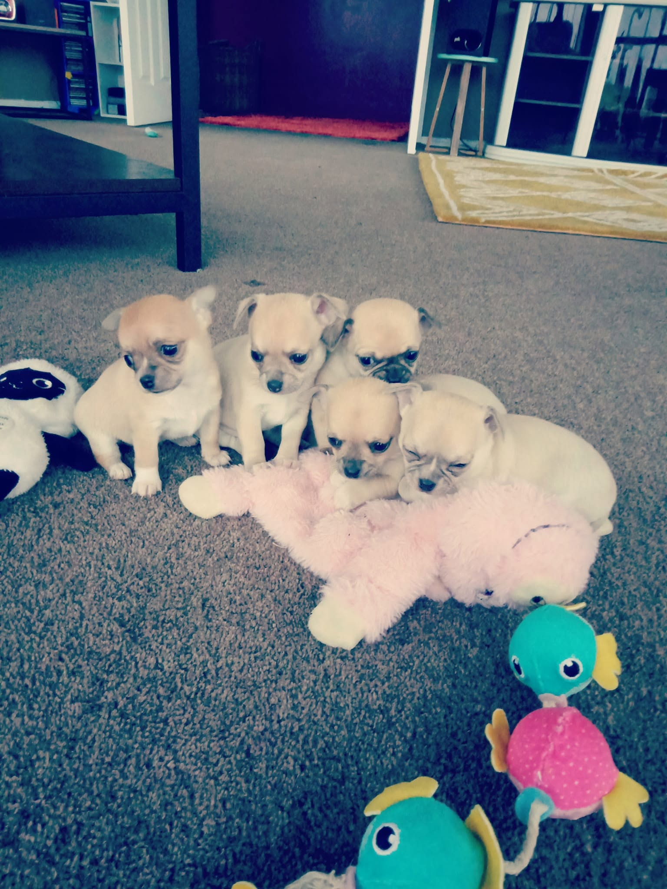
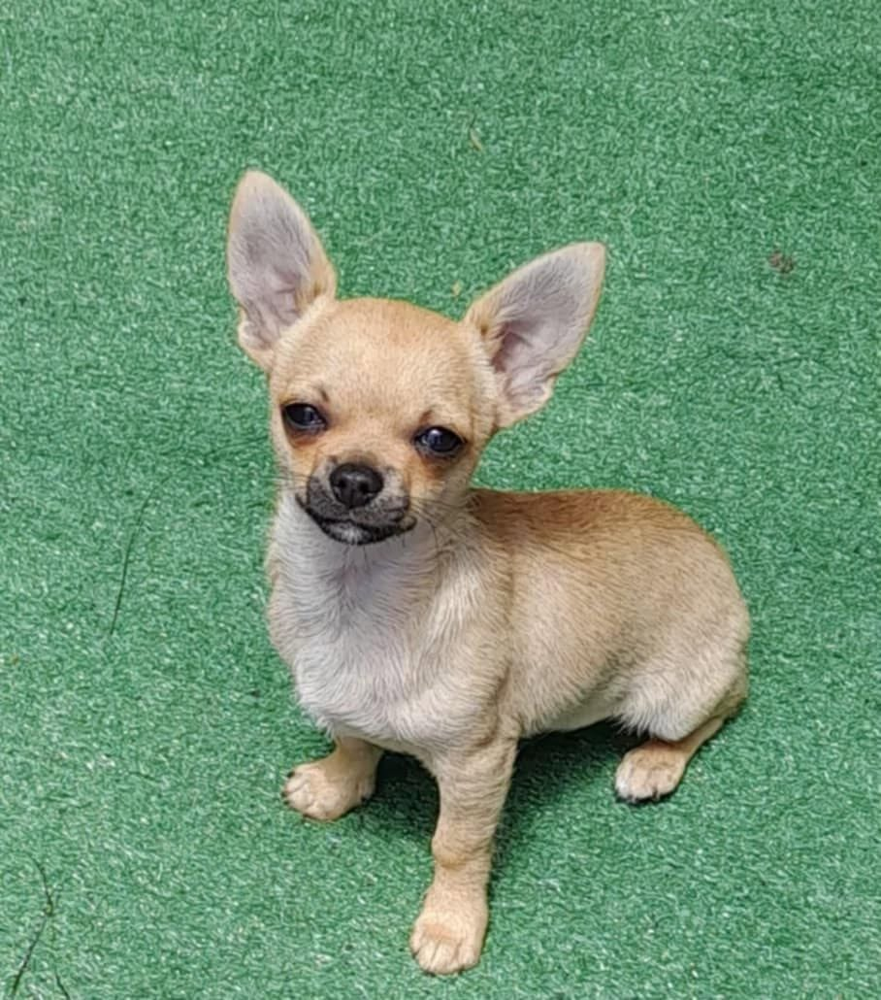
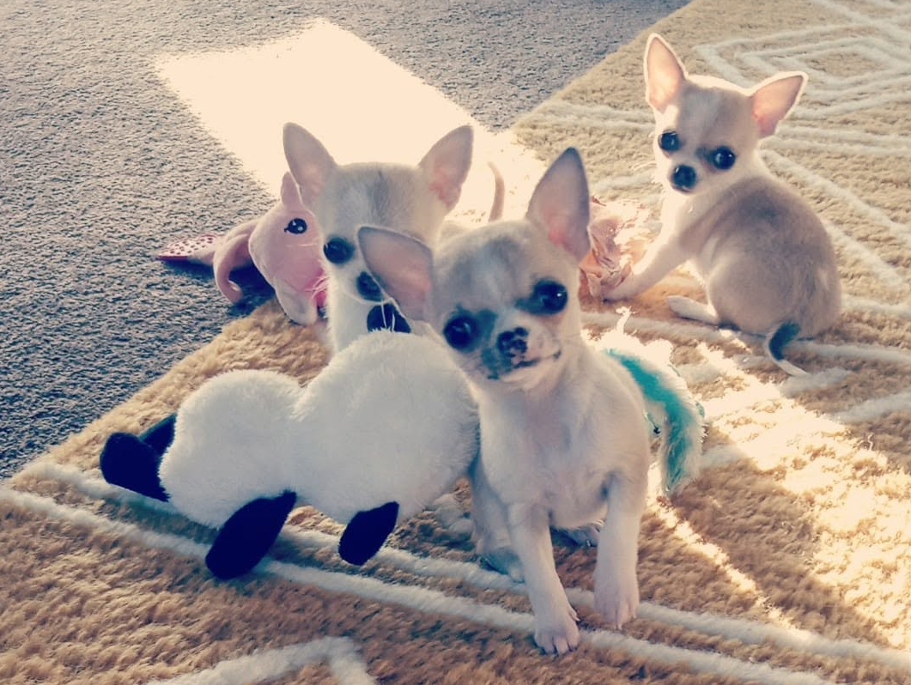
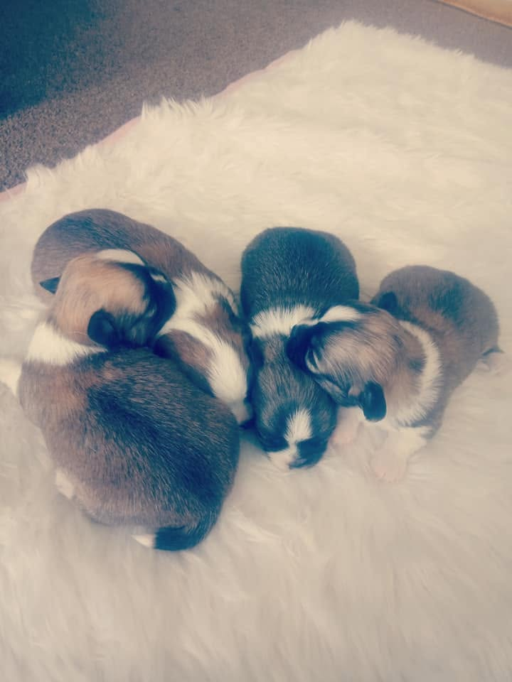

Salinacruz Puppies
Smooth coat Chihuahua puppies from over 35 years of champion bloodlines, raised in the home with care and raised to the breed standard from day one.

Not Just a Puppy — a Salinacruz
Every Salinacruz puppy comes with three and a half decades of breeding knowledge behind it. These are not accidental litters — every breeding is planned, considered, and purposeful.
Yvonne produces a small number of litters each year. This is by design. Fewer litters means more time with each puppy, more careful observation of development, and more attention to finding exactly the right home for each one.
Salinacruz puppies are raised underfoot in the family home from birth. They are handled daily, exposed to household sounds and routines, and socialised to be confident, well-adjusted little dogs long before they go to their new families.
Whether you are looking for a show prospect, a breeding dog, or simply a companion of exceptional quality, a Salinacruz puppy is a dog built to last — in the ring and in the home.
What’s Included
Salinacruz puppies leave with everything they need for a great start.
Dogs NZ Registration
All Salinacruz puppies are registered with Dogs New Zealand on the main register, with full pedigree documentation provided.
Veterinary Health Check
Each puppy receives a full veterinary examination before leaving. Health and soundness are non-negotiable at Salinacruz.
Vaccinations
Puppies are vaccinated and wormed to schedule before going to their new homes. A full vaccination record is provided.
Pedigree Certificate
A full five-generation pedigree comes with every puppy, so you can see the champion bloodlines behind your dog.
Diet & Care Information
A detailed diet sheet and care guide specific to your puppy, covering feeding, grooming, exercise, and settling in advice.
Ongoing Support
Yvonne is always available to answer questions. When you buy a Salinacruz puppy, you have a knowledgeable friend in the breed for life.
Puppy Gallery
Smooth coat Chihuahua puppies from Salinacruz litters past and present.




The Enquiry Process
Salinacruz puppies go to carefully selected homes. Here’s how the process works.
Get in Touch
Contact Yvonne by phone or email to introduce yourself and tell us what you’re looking for in a Chihuahua.
Have a Chat
Yvonne will have a conversation with you about the breed, your lifestyle, and whether a Salinacruz puppy is the right fit.
Join the Waiting List
Suitable applicants are placed on a waiting list. We will contact you when a litter is planned or puppies become available.
Meet Your Puppy
When the time is right, you’ll be introduced to your puppy and can visit before they are ready to go home.
What We Look For in a Home
Salinacruz puppies are placed only with families who can offer the right environment. Chihuahuas thrive with people who understand the breed. Here is what matters to us:
Safe, Secure Home
A home where the puppy will be safe, secure, and treated as a family member.
Time & Attention
Chihuahuas bond closely and need companionship. We want puppies going to people with time to give.
Commitment to Care
Willingness to provide regular veterinary care, appropriate nutrition, and lifelong commitment.
Breed Understanding
Some knowledge of or willingness to learn about the Chihuahua breed and its specific needs.
Supervised with Children
Families with young children should be committed to supervised interaction — Chihuahuas are small and fragile.
Open Communication
We want to hear how our puppies are doing. We love updates and are always here to help if questions arise.
FAQ
Enquire About a Puppy
The best way to secure a Salinacruz puppy is to get in touch early. Yvonne is happy to have a conversation, answer questions, and add you to the waiting list when the time is right.
Send an Enquiry